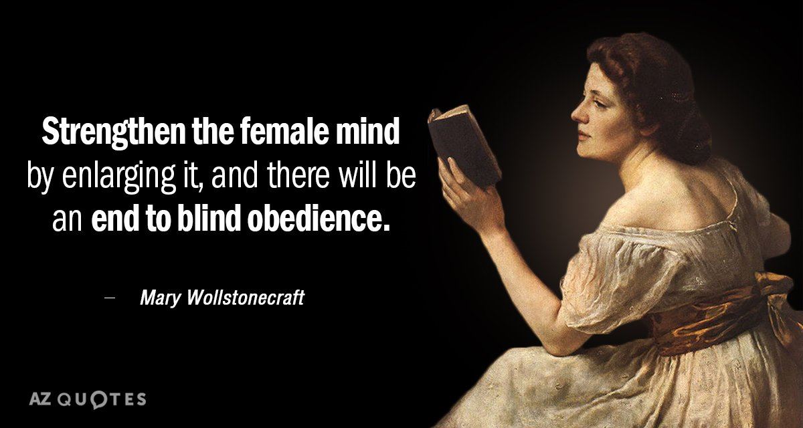

Mary Wollstonecraft ( pronounced : / ˈwʊlstənkrɑːft /; April 27, 1759 - September 10, 1797 ) was an 18th-century English writer , philosopher and protector for her entire life. working on novels, essays, signing trips, about the history of the French revolution , books on morality, and a book about children. Wollstonecraft is best known for his work A Vindication of the Rights of Woman(1792), in which she argued that women are not inferior to men, but because they lack education. She admits that both men and women must be treated equally and envisioned as a social order based on that principle.
To the public and especially to women's rights defenders, Wollstonecraft's life has received more attention than her writing career due to many complicated personal relationships in Wollstonecraft. After two unfortunate marriages with Henry Fuseli and Gilbert Imlay.
PNVN British writer Mary Wollstonecraft has been dubbed the "mother of feminism". She is the author of the "Proof of women's rights" - important work in the early period of the feminist movement.
In 1784, she helped Eliza, who was depressed by her depression because of her family's abandonment of her husband. With this action, Mary Wollstonecraft proved that she was ready to challenge social norms at the time. However, the society at that time did not accept that, she was unable to be re-priced by all people, so she had to live in poverty and had to work hard to earn a living.
Mary Wollstonecraft is considered a liberal feminist because her approach is primarily concerned with women's individuality and attention to rights. She honors the natural talents of women and emphasizes that it is impossible to use measures with men's standards to measure women.
Like some contemporary women, such as Judith Sargent Murray in the US and Olympe de Gouges in France, Mary Wollstonecraft is a participant and observer of a series of social revolutions. One of those revolutions was the Enlightenment ideology: skepticism and revision of institutions such as family, state, educational theory and religion.
Mary Wollstonecraft looks back on her own life and those of other women in her family and finds that abuse of women is closely related to her family. She found abused victims could only rely very little on law. As for middle-class women emerging, unmarried or unmarried women, often have to earn their living and support their families.
The contrast between the words about human rights and the reality of women's lives motivates Mary Wollstonecraft to write the "Proof of women's rights" (A Vindication of the Rights of Woman) in the year. 1792. After completing any chapter, she immediately took it to print.
This is a classic work that raises the idea of feminism. In this work, she argues that the inferiority of women is not due to birth, but the result of a deviant male-dominated education process on women. Therefore, she suggested that both men and women should enjoy a rational-based education and she envisioned a rational social order that was rationalized and free from all prejudices.
The proof of women's rights is an important work in the early period of the feminist movement. In the same year, Mary Wollstonecraft came into contact with William Godwin, who had been with her in previous intellectual discussion groups. A few months later, they became lovers, but still lived apart from each other to focus on writing. Both men have a philosophy against marriage institutions with positive arguments. However, when Mary Wollstonecraft became pregnant, they decided to get married, although they continued to live in two separate apartments. One tragic thing is that after two weeks of giving birth, Mrs. Wollstonecraft died of a blood infection.
Soon after Mary Wollstonecraft died, Godwin published his memoir on her. He also published her incomplete novel entitled "Maria: or the Wrongs of Woman". However, his sincerity in his memoirs tells her tragic love relationships, the times when she attempted suicide, financial difficulties, which made conservative critics rely That to attack, smear all women's rights. Since then, many readers have shunned Mary Wollstonecraft's works. It is ironic that Godwin's sincere work and love have almost created an intellectual loss in Mary Wollstonecraft's mindset.
Today, Mary Wollstonecraft is considered one of the founders of the philosophy of feminism. Her ideology and personal struggles have made a significant impact on later feminists.
Alice Paul (1885-1977) is an advocate of extending the right to vote for...
Simone de Beauvoir (1908-1986) was a French writer and philosopher...
Oprah Winfrey (1954) was a television talk show host, political...
Susan B. Anthony (1820-1906) was a pioneer of the feminist movement...